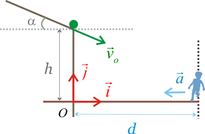

<!DOCTYPE html>
<html>
<head>
<title>Problema de Cinematica</title>
</head>
</html>
<html>
  <body>
<p>Problema de CinematicaUna pelota cae por un plano inclinado un &aacutengulo &#945 = 30&deg a un barranco de altura h = 6 m, con una velocidad de m&oacutedulo 8 m/s en el momento de abandonar el plano. Un chico se encuentra en el fondo del barranco a una distancia d = 8.5 m de la base del mismo.</p>
<p>&nbsp;</p>

<table style="height: 78px;" width="743">
<tbody>
<tr>
<td>
<p>1)Indicar cuales son las componentes del vector posici&oacuten y el vector velocidad de la pelota en funci&oacuten del tiempo</p>
</td>
<td>
<div id="comp">&nbsp;</div>
</td>
</tr>
<tr>
<td>
<p>2)Calcular en el instante t = 0.2 s el m&oacutedulo de la velocidad y la altura a la que se encuentra.</p>
</td>
<td>
<div id="calc">&nbsp;</div>
</td>
</tr>
<tr>
<td>
<p>3)Calcular el tiempo que tarda en llegar al suelo, la distancia recorrida en el eje horizontal y el vector velocidad en ese instante.</p>
</td>
<td>
<div id="pop1">&nbsp;</div>
</td>
</tr>
<tr>
<td>
4)El chico empieza a correr justo en el instante en el que la pelota abandona el plano.
Calcular con qu&eacute aceleraci&oacuten como m&iacutenimo tendr&iacutea que arrancar si quiere tomarla antes de que llegue al suelo.</td>
<td>
<div id="pop2">&nbsp;</div>
</td>
</tr>
</tbody>
</table>
<!--
    This is where you link to your React code. Can be .js or .jsx 
    extension, doesn't really matter.
    -->

<script src="index.js"></script>
  </body>
</html>